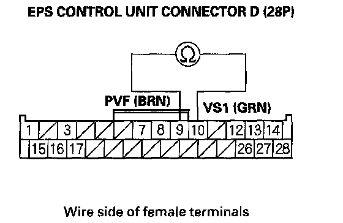
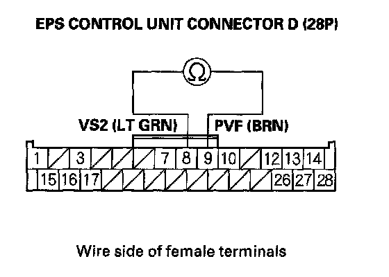
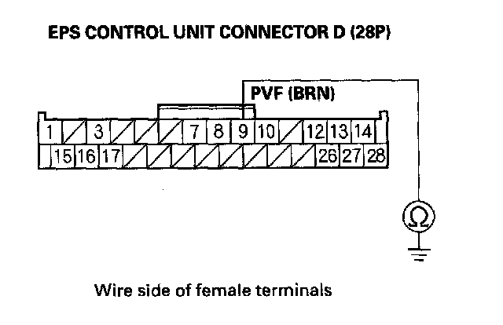
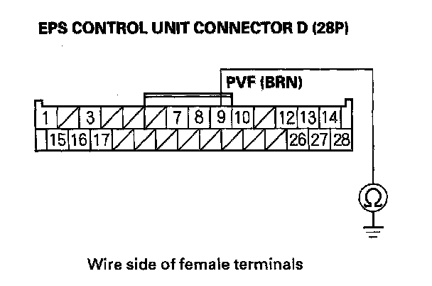
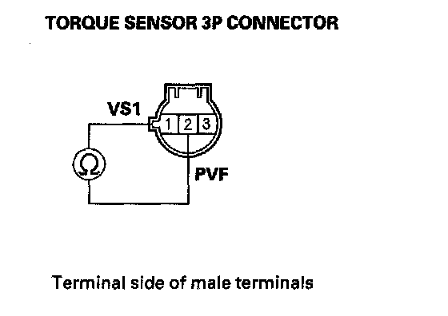
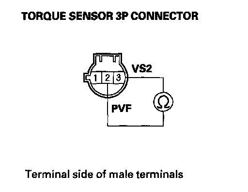

DTC 51-07
DTC 51-02: Torque Sensor (VT3 Differential amplification Function) (Regular diagnosis)DTC 51-03: Torque Sensor (VT1, VT2 Rapid change) (Regular diagnosis)
DTC 51-06: Torque Sensor (VT1, VT2 Average) (Regular diagnosis)
DTC 51-07: Torque Sensor (VT1, VT2 Initial Check) (Initial diagnosis)
1. Clear the DTC with the HDS
2. Turn the ignition switch OFF.
3. Start the engine.
Does the EPS indicator come on?
YES - Go to step 4.
NO - Check for loose terminals or poor connections. If the connections are good, the system is OK at this time.
4. Check for DTCs with the HDS.
Is DTC 51-02, 51-03,51-06 or 51-07 indicated?
YES - Go to step 5.
NO - Troubleshoot the indicated DTC. If there are no DTCs, the system is OK at this time.
5. Turn the ignition switch OFF.
6. Disconnect EPS control unit connector D (28P).
7. Measure the resistance between EPS control unit connector D (28P) terminals No. 9 and No. 10.

Is the resistance between 12 - 15 ohms?
YES - Go to step 8.
NO - Go to step 12.
8. Measure resistance between EPS control unit connector D (28P) terminals No. 8 and No. 9.

Is the resistance between 12 - 15 ohms?
YES - Go to step 9.
NO - Go to step 14.
9. Check for continuity between EPS control unit connector D (28P) terminal No. 9 and body ground.

Is there continuity?
YES - Go to step 10.
NO - Check for loose terminals in the EPS control unit connectors, and repair if necessary. If no poor connections are found, replace the EPS control unit.
10. Disconnect the torque sensor 3P connector from the steering gearbox.
11. Check for continuity between EPS control unit connector D (28P) terminal No. 9 and body ground.

Is there continuity?
YES - Repair short to body ground in the wire between the torque sensor and the EPS control unit.
NO - Faulty torque sensor (short in the sensor internal circuit), replace the steering gearbox.
12. Disconnect the torque sensor 3P connector from the steering gearbox.
13. On the sensor side, measure the resistance between torque sensor terminals No. 1 and No. 2.

Is the resistance between 12 - 15 ohms?
YES - Repair open or short between the PNK and BLU/RED wires in the torque sensor circuit between the torque sensor and the EPS control unit.
NO - Faulty torque sensor (short or open in the internal circuit), replace the steering gearbox.
14. Disconnect the torque sensor 3P connector from the steering gearbox.
15. On the sensor side, measure the resistance between torque sensor terminals No. 2 and No. 3.

Is the resistance between 12 - 15 ohms?
YES - Repair open or short between the BLU/RED and WHT/GRN wires in the torque sensor circuit between the torque sensor and the EPS control unit.
NO - Faulty torque sensor (short or open in the internal circuit), replace the steering gearbox.